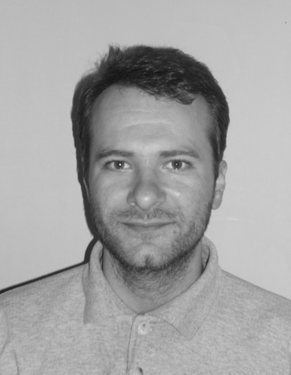

CV - Igor Lakić
I) LIČNI PODACI
Ime i prezime:
Adresa stanovanja:
Kontakt:
Datum i mesto rođenja:
Bračno stanje:
Vojni rok:
Igor Lakić
Bogdana Žerajića 1, 11000 Beograd, Miljakovac
telefon (mobilni): +381 64 8022053, telefon (kućni): +381 11 3594810,
e-mail: igorlakic79@gmail.com
28.11.1979. godine, Beograd, Srbija
oženjen
odslužen

11000 Beograd, Miljakovac
Kontakt: telefon (mobilni): +381 64 8022053
telefon (kućni): +381 11 3594810
e-mail: igorlakic79@gmail.com
Datum i mesto rođenja: 28.11.1979. godine, Beograd, Srbija
Bračno stanje: oženjen
Vojni rok: odslužen
II) RADNO ISKUSTVO
- 10 godina i 1 mesec
1 godina i 9 meseci
(april 2017. – decembar 2018.)
trenutno zaposlen u Alzziti – otkazni rok Alzzita doo – vođa projekta, pre toga tehnički crtač
• Projektovanje tehnologije kuhinje (AutoCAD) u skladu sa HACCP standardima
• Izrada plana ViK, elektro i plinskih instalacija za ugostiteljske objekte u skladu sa zahtevima
predložene
opreme
• Davanje ponuda za izradu i montažu ugostiteljske opreme od inox-a iz proizvodnog programa Alzzite i
Electrolux professional,
• Komunikacija sa klijentima kako na terenu tako i preko telefona i u kancelariji
• Snimanje postojećeg stanja i postojećih instalacija, kao i uzimanje mera na objektu
• Izrada potrebne tehničke dokumentacije za proizvodnju inox opreme u AutoCAD-u i kroz slobodoručne
skice,
• Svakodnevna komunikacija sa proizvodnim pogonom i kontrola kvaliteta izvedene opreme
• Nabavka i prijem repromaterijala,
• Izrada ponuda, faktura i otpremnica, radnih naloga i trebovanja u robno-knjigovodstvenom programu
Calculus
1 godina i 11 meseci
(mart 2015. – januar 2017.) Limar doo – tehnička priprema fajlova za CNC mašinu i operater na CNC
mašini:
• Izrada tehničkih crteža u AutoCAD-u prema donetom uzorku
• Izrada tehničkih crteža u IGEMSU (CAD-CAM sofver za pripremu CNC programa)
• Davanje ponuda za izradu delova na water jet mašini,
• Izrada CNC programa (softver IGEMS) za sečenje na water jet mašini,
• Kao operater na water jet mašinama (WJ 3015 sa Fanuc upravljačkom konzolom i WJ 2010 sa Mach 3
softverom),
• Nabavka i prijem materijala, isporuka gotovih komada,
• Izrada faktura u programu Biznis Soft
5 meseci
(septembar 2014. – januar 2014.) U privatnoj stolarskoj radionici rad na montaži kuhinja, plakara i
drugog
nameštaja po meri od univera i medijapana. Izrada 3d modela kuhinja, plakara... u programu 3dsMAX.
1 godina i 6 meseci
(mart 2013. – avgust 2014.) Vitorog promet doo – monter pločastog nameštaja i vozač:
• Montaža nameštaja od pločastog materijala,
• Isporuka tapaciranog i nameštaja od pločastog materijala,
• Rešavanje reklamacija, kako u kancelariji tako i na terenu.
4 godine i 6 meseci
(mај 2007. – oktobar 2011.) JP „Srbijašume“ – Šumskom gazdinstvu „Beograd“:
• Izrada i sprovođenja programa upravljanja zaštićenim područjima „Avala“ i „Miljakovačka šuma“
• Pejzažno uređenje Teniskog Centra Novak
• Pejzažno uređenje studijskog kompleksa RTV Pink u Šimanovcima
• Pejzažno uređenje bašte studentskog odmarališta Radojka Lakić na Avali
(Praksa u rasadnicima u Topčideru, Sremčici i na Avali)
(Odrađen jednogodišnji pripravnjički staž u JP „Srbijašume“ - Šumskom gazdinstvu „Beograd“)
III) OBRAZOVANJE
Oktobar 1999. – Mart 2007. Univerzitet u Beogradu, Šumarski fakultet, Odsek za pejzažnu arhitekturu
Septembar 1994. – Jun 1998. Škola za dizajn, Odsek za industrijski dizajn
IV) OSTALE SPOSOBNOSTI
Strani jezik: Engleski
Vozačka dozvola: «B» kategorija (aktivan vozač 10 godina)
Računarski programi: AutoCAD (17 godina),
3ds MAX (12 godina sa prekidima),
CorelDRAW (12 godina sa prekidima),
Word, Excel,
Biznis Soft (knjigovodstveni program),
Calculus (knjigovodstveni program),
IGEMS (CAD/CAM softver za waterjet mašine)
Hobi: Stoni tenis; Projektovanje i izrada nameštaja po meri